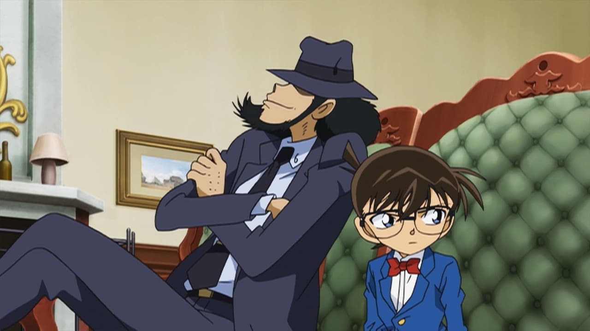

Disclaimer: This is a review of the 2009 feature-length TV special "Lupin the Third VS Detective Conan - The Special," and not the 2013 feature-length theatrical film of the same name (this is covered in a different review). For watching order: you should watch "The Special" before "The Movie."This was... confusing. Not only was there one crossover of Japan's two most recognizable cartoons (Lupin the Third and Detective Conan), there were two. With the same title. One is "The Movie," and the other officially has no subtitle, but was released in America as "The Special"... it's a TV special the length of a movie... huh. Discotek Media is usually helpful, but releasing both in separate boxes, with nearly the same box art, didn't help at all. Was one just an edited version of the other for TV? Or were both different? Were the stories related at all, or could you watch these separately? These are important questions, and hopefully this review covers things a bit. "The Special" was released first, in 2009, for TV, and "The Movie" came later in 2013 for theatres. The stories are completely different, but "The Special" is effectively a prequel to "The Movie," where certain events and knowledge in "the Special" are directly referenced. Even though the stories are separate enough, it's highly recommended that you watch "the Special" before "the Movie." Or you can just watch "the Special," but "the Movie" is worth watching too (that's covered in a different review). Anyway...Set in a fictional kingdom of Vespania, the Queen and her son Prince are killed in a hunting accident. Or was it really an accident? Princess Mira is the last remaining heir, and she's not thrilled with the responsibility, especially as the citizens protest to be done with the monarchy. On a royal visit to Japan, Princess Mira finds an opportunity to escape, if only briefly, by switching places with a doppelganger: Ran Mouri, the female co-lead of Detective Conan's adventures. Ran and Conan end up stuck searching for Mira, while keeping the "Prince and the Pauper" switch a secret, lest they start international political drama. Lupin the Third and his crew are also in town (Jigen happens to be hired to train the royal guard), planning to steal the crown jewels from Vespania, and a certain rare ore from the kingdom might be just what he needs to pull off the job. The story is a little slow, especially for a longer-than-normal runtime, largely due to the focus on Princess Mira, a suppossedly selfish teenager that likes to smoke and drink. Things are at their most interesting when the story comes back to the mystery (who really killed the Queen?), and in classic Detective Conan style, that's the most entertaining part right up to the big reveal. The role Lupin's side plays in the story is interesting... Lupin doesn't actually meet Conan until the halfway point, and it's brief - like two paths that happen to cross once. But at the same time, they're essential to what is effectively a Conan story, specifically a Ran Mouri story. There aren't too many side characters from either franchise here either, helping keep it accessible to newcomers. This shows restraint in a good way. While it was fun to see Conan's cleverness and his brief interactions with the Lupin gang, there were occassionally plot holes, with a big one at the end: they reveal they know Conan is really a teenger in a boy's body. This secret was kept from Conan's friends for hundred's of episodes, how did they figure it out so quickly? They don't really explain it, and presumably, they need to know this to put them on equal footing for "the Movie" afterwards. But whether they got it from looking at his passport or data records, or connections to the poison that turned him this way... a little more explaination would have been nice. And the "VS" is a bit of a misnomer here for American English: the two sides ultimately work together here (unlike "the Movie" that comes later). Production values make it clear this was meant for TV, with a limited animation budget, and multiple commercial ad-breaks built into the video. The visual design is pretty cool though, managing to merge the distinct styles of both Lupin and Conan in a way that isn't too distracting. It's a more colourful, slightly bolder, modern look for Lupin, and coming from the older movies, looks great. The English dub, partly newly cast, feels natural to the long-running characters. In terms of production quality, this is a little less than average for Lupin, but Conan's mystery-driven storyline helps elevate the movie to be worthwhile. And I do think "Lupin the Third VS Detective Conan - The Special" is worthwhile. Especially since it sets you up to be able to watch "The Movie." But even without that, this was an unlikely, but surprisingly natural, crossover in the TMS-multiverse.
- "Ani" More reviews can be found at : https://2danicritic.github.io/ Previous review: review_Lupin_the_Third_VS_Detective_Conan_-_The_Movie Next review: review_Made_in_Abyss